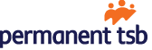

Affiliated Groups
- The Open Web Application Security Project® (OWASP) is a nonprofit foundation that works to improve the security of software.
- Through community-led open source software projects, hundreds of local chapters worldwide, tens of thousands of members, and leading educational and training conferences, the OWASP Foundation is the source for developers and technologists to secure the web.
- For nearly two decades corporations, foundations, developers, and volunteers have supported the OWASP Foundation and its work. Donate, Join, or become a Corporate Member today.
- We are a community dedicated to support women to succeed and excel at all levels of the technology sector and to help close the gender gap in the industry.
- Our mission to inspire, empower and connect women working or aspiring to work in the field to further improve and develop their careers.
- We organise free events with our wonderful partners who embrace and support a culture of diversity and inclusion. Covering a range of technical topics, leadership and professional development, we help our community to build their skills, define their careers, and enable their potential.
- Our events are open to everyone - those who actively participate in the advancement of women regardless of identifying themselves as female are welcome.

- Reviewing and interpreting Test Basis documentation primarily for, but not limited to, UAT.